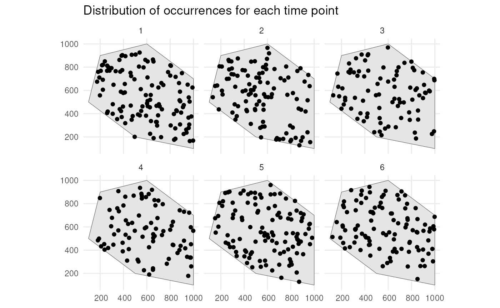
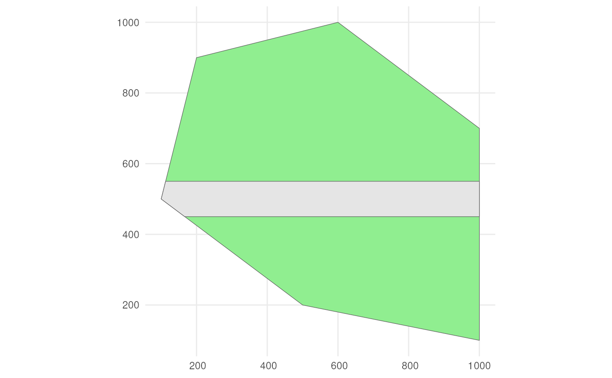

2. Simulating the detection process
Source:vignettes/articles/detection-process.Rmd
detection-process.RmdThe workflow for simulating a biodiversity data cube used in gcube can be divided in three steps or processes:
- Occurrence process
- Detection process
- Grid designation process
This tutorial documents the second part of the gcube simulation workflow, viz. the detection process.
# Load packages
library(gcube)
library(sf) # work with spatial objects
library(dplyr) # data wrangling
library(ggplot2) # data visualisationInput
The functions are set up such that a single polygon as input is enough to go through this workflow using default arguments. The user can change these arguments to allow for more flexibility.
As input, we create a polygon in which we simulate occurrences. It represents the spatial extent of the species.
polygon <- st_polygon(list(cbind(c(500, 1000, 1000, 600, 200, 100, 500),
c(200, 100, 700, 1000, 900, 500, 200))))The polygon looks like this.
ggplot() +
geom_sf(data = polygon) +
theme_minimal()
We can for example sample randomly within the polygon over 6 time points were we use a random walk over time with an initial average number of occurrences equal to 100 (see see tutorial 1 about simulating the occurrence process).
occurrences_df <- simulate_occurrences(
species_range = polygon,
initial_average_occurrences = 100,
n_time_points = 6,
temporal_function = simulate_random_walk,
sd_step = 1,
spatial_pattern = "random",
seed = 123
)
#> [using unconditional Gaussian simulation]This is the spatial distribution of the occurrences for each time point
ggplot() +
geom_sf(data = polygon) +
geom_sf(data = occurrences_df) +
facet_wrap(~time_point, nrow = 2) +
ggtitle("Distribution of occurrences for each time point") +
theme_minimal()
Detect occurrences
We have our occurrences, but not all occurrences are generally
observed. The detection of occurrences depends on the detection
probability of a species and the sampling bias (includes both sampling
bias and effort). This process can be simulated using the
sample_observations() function.
?sample_observationsEach observation will have a detection probability value (=the same
for all observations) and a bias weight depending on its spatial
distribution. The combination of detection probability and bias weight
results in a sampling probability which is used to decide whether each
occurrence is detected or not using
(rbinom(1, 1, sampling_probability)).
For bias there are 3 options: "no_bias",
"polygon" or "manual".
- With
"no_bias", only the detection probability value will decide whether an occurrence is observed or not. - With
"polygon", bias weights depend on their location inside or outside a given polygon with a certain bias strength. We can visualise this using the supporting functionapply_polygon_sampling_bias().
?apply_polygon_sampling_biasLets say we have a road across our polygon. Define the road width.
road_width <- 50Create road points.
Create road-like polygon within the given polygon.
road_polygon <- st_linestring(road_points) %>%
st_buffer(road_width) %>%
st_intersection(polygon) %>%
st_polygon() %>%
st_sfc() %>%
st_as_sf() %>%
rename(geometry = x)Plot the result.
ggplot() +
geom_sf(data = polygon, fill = "lightgreen") +
geom_sf(data = road_polygon) +
theme_minimal()
We can say that occurrences on the road have 2x larger probability to be detected.
occurrence_bias_df1 <- apply_polygon_sampling_bias(
occurrences_df,
bias_area = road_polygon,
bias_strength = 2
)We see that occurrences on the road have twice the bias weights as the other occurrences.
ggplot() +
geom_sf(data = polygon, fill = "lightgreen") +
geom_sf(data = road_polygon) +
geom_sf(data = occurrence_bias_df1,
aes(colour = factor(round(bias_weight, 3)))) +
facet_wrap(~time_point, nrow = 2) +
labs(title = "Distribution of occurrences for each time point",
colour = "bias_weight") +
theme_minimal()- With
"manual", bias weights depend on their location inside grid cells of a given grid where each cell has its own value. We can visualise this using the supporting functionapply_manual_sampling_bias().
?apply_manual_sampling_biasLets create a grid and give random bias weights to each cell.
grid <- st_make_grid(
polygon,
n = c(10, 10),
square = TRUE
) %>%
st_sf()
set.seed(123)
grid$bias_weight <- runif(nrow(grid), min = 0, max = 1)Plot the grid.
ggplot() +
geom_sf(data = polygon) +
geom_sf(data = grid, alpha = 0) +
geom_sf_text(data = grid, aes(label = round(bias_weight, 2))) +
theme_minimal()We use the supporting function. We only use time point 1.
occurrence_bias_df2 <- apply_manual_sampling_bias(
occurrences_df %>% dplyr::filter(time_point == 1),
bias_weights = grid
)We indeed see higher bias weights for occurrences where with higher values in the grid cells.
ggplot() +
geom_sf(data = polygon) +
geom_sf(data = grid, alpha = 0) +
geom_sf(data = occurrence_bias_df2,
aes(colour = bias_weight)) +
geom_sf_text(data = grid, aes(label = round(bias_weight, 2))) +
theme_minimal()Example
Now that we know how the supporting functions work, we can simulate
the detection process using the sample_observations()
function. We can for example state that our species has a 0.9 detection
probability and this time we say there is a very small chance to detect
it on the road.
detections_df_raw <- sample_observations(
occurrences_df,
detection_probability = 0.9,
sampling_bias = "polygon",
bias_area = road_polygon,
bias_strength = 0.1,
seed = 123
)We see that a lot of occurrences are detected due to the high detection probability, but this is not the case on the road where few are detected.
ggplot() +
geom_sf(data = polygon, fill = "lightgreen") +
geom_sf(data = road_polygon) +
geom_sf(data = detections_df_raw,
aes(colour = observed)) +
scale_colour_manual(values = c("blue", "red")) +
facet_wrap(~time_point, nrow = 2) +
labs(title = "Distribution of occurrences for each time point") +
theme_minimal()Adding coordinate uncertainty
To mimic real life data collection, we can finally add coordinate
uncertainty to our observations. We only keep the detected occurrences
of the previous example. We can filter with
dplyr::filter().
Or we can use the function filter_observations().
?filter_observations
detections_df2 <- filter_observations(
observations_total = detections_df_raw
)
# Do we get the same result?
identical(detections_df1, detections_df2)
#> [1] TRUEWe add coordinate uncertainty to the observations using the
add_coordinate_uncertainty() function.
?add_coordinate_uncertaintyYou can add a value for all observations or a vector with a single value for each observation. Lets add 25 meters of uncertainty to each observation.
observations_df <- add_coordinate_uncertainty(
observations = detections_df2,
coords_uncertainty_meters = 25
)Created and sf object with uncertainty circles to visualise this.
buffered_observations <- st_buffer(
observations_df,
observations_df$coordinateUncertaintyInMeters
)
ggplot() +
geom_sf(data = polygon, fill = "lightgreen") +
geom_sf(data = road_polygon) +
geom_sf(data = buffered_observations,
fill = alpha("firebrick", 0.3)) +
geom_sf(data = observations_df, colour = "firebrick", size = 0.8) +
facet_wrap(~time_point, nrow = 2) +
labs(title = "Distribution of observations for each time point") +
theme_minimal()